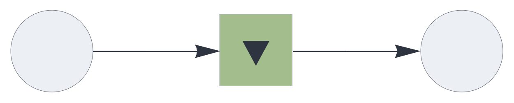
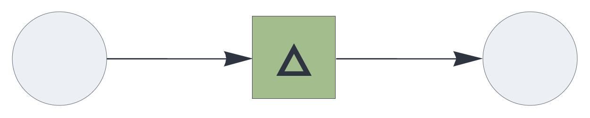
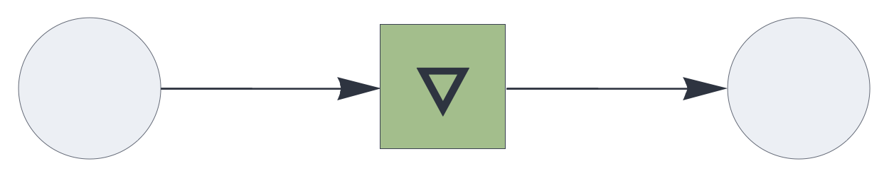
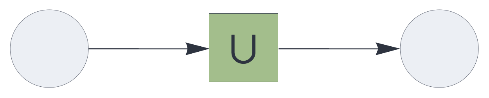
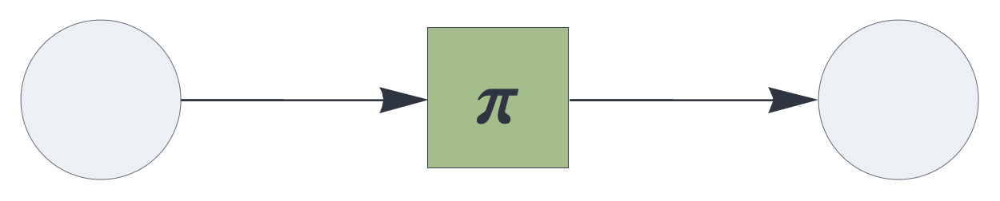

CIRCUIT COMPONENTS
temporal
Temporal associative memory component.
Details and properties
- Learns the association of the temporal state with the current input.
- Automatically learns if the previous prediction was incorrect.
- A closed feedback loop enables generative behavior.
- Predicts the next input based on the state.
- Supports temporal integration of signals across evaluation cycles, governed by update rule plugins.
- Uses update rule plugins to control the mechanics of state updates.
- Supports the same set of update rules for temporal
integration as the
delaycomponent. - Controls sparsity through stochastic subsampling
mechanisms.
- Supports multiple input or output blocks.
| Property | Default | Description |
|---|---|---|
send |
required | [integer,...]
representing one or more output slots |
receive |
required | one or more input slots with pathway tags |
plugin |
replacement |
update rule, governing the temporal integration logic |
latch |
false | whether to skip the update if the input is empty |
threshold |
0 | clear input if relative population is below threshold |
rate_limit |
infinite | subsample input if population exceeds the rate limit |
decay |
0 | pre-integration decay (leak rate) |
capacity |
1 | relative population carried over
from previous state (bypassed with default
replacement plugin) |
decimate |
1 | proportional stochastic decimation |
Use standard style options to customize the component’s appearance in circuit schematics.
Temporal associative memory with replacement update
The temporal
component applies the replacement update rule by
default. At every execution cycle, it replaces the internal
state with the current input, bypassing the
capacity setting. This mechanism directly
associates each signal to the subsequent signal.
{ "hyperparameters": {"default": [1000, 10]},
"dataflow": [
{"component": "input", "send": [1]},
{"component": "temporal", "send": [11], "receive": [1]},
{"component": "output", "receive": [11]}
]}
Temporal associative memory with difference update
Used as a plugin for the temporal component, the
difference update rule replaces the internal state
with the symmetric multiset difference of the state and the
incoming signal.
{ "hyperparameters": {"default": [1000, 10]},
"dataflow": [
{"component": "input", "send": [1]},
{"component": "temporal", "plugin": "difference",
"send": [11], "receive": [1]},
{"component": "output", "receive": [11]}
]}
Temporal associative memory with complement plugin
{ "hyperparameters": {"default": [1000, 10]},
"dataflow": [
{"component": "input", "send": [1]},
{"component": "temporal", "plugin": "complement",
"send": [11], "receive": [1], "capacity": 2},
{"component": "output", "receive": [11]}
]}
Temporal associative memory with state augmentation
Used as a plugin for the temporal component,
augmentation aggregates an orderless state
representing prior inputs.
{ "hyperparameters": {"default": [1000, 10]},
"dataflow": [
{"component": "input", "send": [1]},
{"component": "temporal", "plugin": "augmentation",
"send": [11], "receive": [1], "capacity": 5},
{"component": "output", "receive": [11]}
]}
Temporal associative memory with state permutation
Used as a plugin for the temporal component,
permutation aggregates a state that preservers the
order of prior inputs.
{ "hyperparameters": {"default": [1000, 10]},
"dataflow": [
{"component": "input", "send": [1]},
{"component": "temporal", "plugin": "permutation",
"send": [11], "receive": [1], "capacity": 2},
{"component": "output", "receive": [11]}
]}
Source code
def temporal(config):
plugin_factory = config.get("plugin", replacement)
if isinstance(plugin_factory, str):
import sys
plugin_factory = getattr(
sys.modules[__name__],
plugin_factory,
replacement)
plugin = plugin_factory(config)
receive_blocks = config.get("receive_blocks", [])
dims = [b[0] for b in receive_blocks]
params = [sum(b[0] for b in receive_blocks), sum(b[1]
for b in receive_blocks)]
pop = params[1] if len(params) > 1 else 0
threshold_factor = config.get("threshold", 0.0)
absthreshold = round(threshold_factor * pop)
rate_limit_factor = config.get("rate_limit", float('inf'))
absratelimit = round(
rate_limit_factor *
pop) if rate_limit_factor != float('inf') else float('inf')
decay = config.get("decay", 0.0)
capacity_factor = config.get("capacity", 1.0)
abscapacity = round(capacity_factor * pop)
decimation = config.get("decimate", 1.0)
latch = config.get("latch", False)
# Memory with identical input and output parameters
m_config = dict(config)
m_config.update({
"A_parameters": params,
"B_parameters": params
})
M = Memory(m_config)
Xstate = []
prediction = []
def f(*blocks):
nonlocal Xstate, prediction
X = multiset_block_join(list(blocks), dims)
# Enforce minimum population
if len(X) < absthreshold:
X = []
# Rate limiting equally applies to positive and negative elements
if len(X) > absratelimit:
X = sorted(
rng.choice(
X,
size=absratelimit,
replace=False).tolist())
# Pre-integration stochastic decay
if decay > 0.0:
keep_size = math.floor((1.0 - decay) * len(Xstate))
Xstate = sorted(
rng.choice(
Xstate,
size=keep_size,
replace=False).tolist())
# Learn state -> current input if prediction was incorrect.
if prediction != X:
M["store"](resolve_normal(Xstate), resolve_normal(X))
# Multiset subsampling applied to previous state
if len(Xstate) > abscapacity:
Xstate = sorted(
rng.choice(
Xstate,
size=abscapacity,
replace=False).tolist())
# Temporal integration via update rules
if not (latch and len(X) == 0):
Xstate = plugin["updaterule"](X, Xstate)
# Proportional multiset subsampling applied to the integrated state
Xdec = Xstate
if decimation < 1.0:
sample_size = math.floor(decimation * len(Xdec))
Xdec = sorted(
rng.choice(
Xdec,
size=sample_size,
replace=False).tolist())
# Predict next token
prediction = M["retrieve"](resolve_normal(Xdec))
return tuple(multiset_block_split(prediction, dims))
result = dict(plugin)
result.update({
"function": f,
"checks": ["arginp", "argout", "ident"],
"shape": "square",
"fill": 14
})
result.update(M)
return result